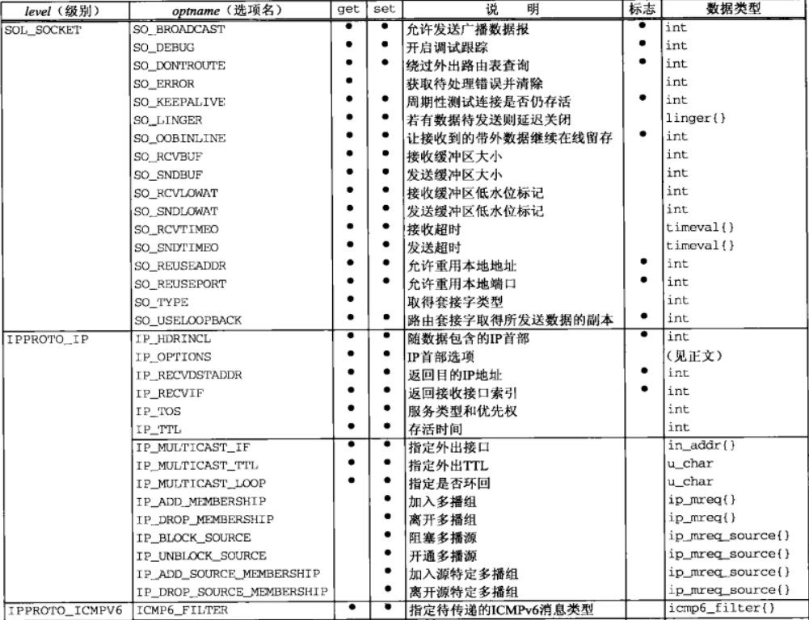
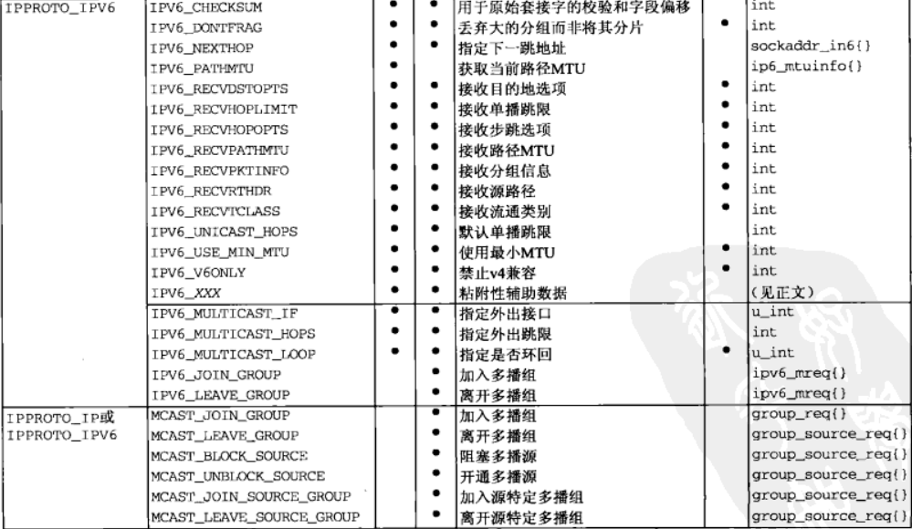
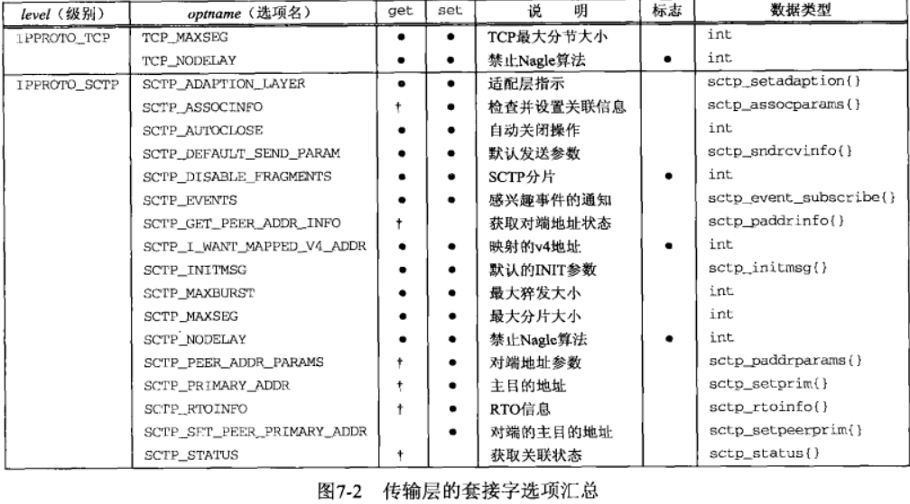
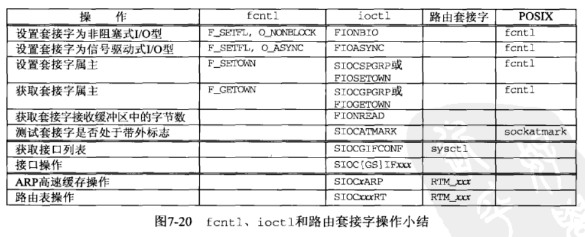

[UNP]:套接字选项
有以下几个API可以用于设置套接字选项:
- getsockopt()
- setsockopt()
- fcntl()
- ioctl()
本文将会这些API以及选项进行介绍
选项汇总图
- 套接字层和IP层


- 传输层

1. getsockopt(), setsockopt()
1 | |
sockfd
打开的套接字描述符
level
用于指定选项是应对通用套接字还是指定特定协议(IPV4, IPV6, SCTP)
optname
选项名，即一些指定的宏
optval
setsockopt()通过它获取新值，getsockopt()把已获取的选项当前值存放到optval所指向的内容
optlen
optval的大小
fcntl(), ioctl()套接字操作图

2. fcntl()
1 | |
fd
描述符(文件/套接字/路由)
cmd
所做的操作，最重要的操作包含两个
F_SETFL
设置选项
F_GETFL
获取选项
arg
参数列表，与cmd搭配， 两个重要的选项：
O_NONBLOCK
通过F_SETFL将套接字设置为O_NONBLOCK, 可以将一个套接字设置为非阻塞型
O_ASYNC
通过F_SETFL将套接字设置为O_ASYNC, 可以将一个套接字设置为一旦其状态发生变化，内核就产生一个SIGIO信号
设置选项的典型使用方法
获取选项
1
2
3
4
5int flag;
/* Set a socket as nonblocking */
if((flag=fcntl(fd, F_GETFL, 0)) < 0){ //必须要先获取其他文件标志
err_sys("F_GETFL, error");
}设置选项
1
2
3
4flag |= O_NONBLOCK; //或运算，打开非阻塞标志
if(fcntl(fd, F_SETFL, flags) <0 ){
err_sys("F_SETFL error");
}取消选项
1
2
3
4flag &= ~O_NONBLOCK; //与运算，关闭非阻塞标志
if(fcntl(fd, F_SETFL, flags) <0 ){
err_sys("F_SETFL error");
}
4. 重要选项说明
IPV4
SO_SNDBUF, SO_RCVBUF
套接字缓冲区
发送缓冲区
每一个TCP, UDP套接字都有一个发送缓冲区，当应用进程调用
write()时，内核会从应用进程的缓冲区复制所有数据到所写套接字的发送缓冲区如果套接字的发送缓冲区容不下进程的所有数据，假设默认情况下套接字阻塞，那么应用进程将被置于休眠状态，在上面的情况下内核将不会从应用进程返回，直到应用进程缓冲区中的所有数据都复制到套接字发送缓冲区
故写一个套接字的
write()调用成功仅意味着数据已经从应用程序缓冲区移动到了套接字缓冲区，并不意味着对端已经接收到了数据仅当套接字接收到来自对端的ACK时，套接字缓冲区中的相应数据才能被丢弃
接受缓冲区
- 每一个TCP, UDP套接字同样有一个接受缓冲区用于保存接收到的数据，直到由应用进程来读取
- TCP
- 对于TCP来说，接收缓冲区的可用空间大小限定了TCP通告对端的窗口大小
- TCP的接受缓冲区不可能溢出，因为不允许对端发送超过该窗口大小的数据，这就是TCP的流量控制
- 如果对端无视了窗口大小而发送了超过该窗口大小的数据，这些数据将会被丢弃
- UDP
- 对于UDP来说，当接收到的数据报装不进套接字接受缓冲区时，该数据报就被丢弃
这两个选项用于设置发送缓冲区大小和接受缓冲区大小，应该在建立连接之前就应该设置完毕:
- 对服务器而言，应该在
listen()调用之前设置 - 对客户机而言，应该在
connect()调用之前设置
SO_REUSEADDR
总体来说，该选项的作用就是地址复用，具体有以下四个功用:
允许服务器绑定某个端口，即使该端口仍然正被用做本地地址使用
考虑以下情景:
- 启动服务器
- 连接请求到达，派生一个子进程来处理该客户
- 监听服务器终止，但子进程继续为现有连接上的客户提供服务
- 重启监听服务器
如果在未使用SO_REUSEADDR选项的情况下，步骤4中的
bind()调用将会失败，因为该端口正在被使用，启动该选项后，即可正常绑定允许在同一个端口上启动同一个服务器的多个实例
IP别名
将多个IP地址赋给多个物理接口的能力叫做IP别名, 第一个IP地址叫做别名(alias)或者逻辑接口, 通常别名地址和主IP地址具有相同的子网ID, 但是具有不同的主机ID
考虑以下情景:
- 本地主机的主IP为198.69.10.2, 另外两个别名为198.69.10.128, 192.69.10.129
- 主机启动三个HTTP服务器， 第一个服务器以 **:80* 作为本地地址调用
bind() - 第二个服务器以198.69.10.128 : 80作为本地地址调用
bind() - 第三个服务器以192.69.10.129作为本地地址调用
bind()
如果在未使用SO_REUSEADDR选项的情况下, 步骤3, 4将会失败， 启动该选项之后，即可正常绑定
允许单个进程绑定同一个端口到多个套接字(sockfd)之上，只要每次捆绑指定的IP地址不同即可
允许完全重复的捆绑，即IP地址与端口号均相同
该特性仅支持UDP, 不支持TCP
本博客所有文章除特别声明外，均采用 CC BY-SA 4.0 协议 ，转载请注明出处！